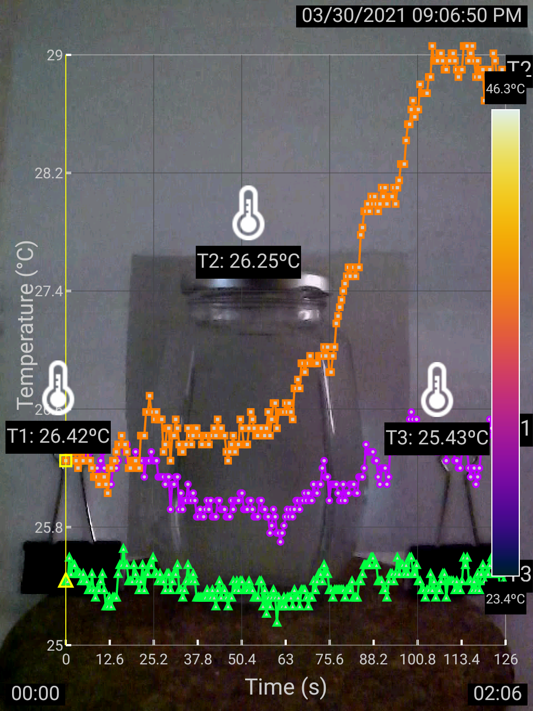

|
 |
Thermographer: Rundong Jiang Description: This experiment uses a hot water jar and a piece of paper to visualize natural convection. As the air around the jar warms up, it leaves a heat trace on the paper, revealing the convective flow. Tap to download the video. |